Redis系列之原理
原理 1：鞭辟入里 —— 线程 IO 模型
Redis到底有多快？
官方提供的数据是可以达到100000+的QPS（每秒内查询次数）。
Redis为什么这么快？
1、完全基于内存，绝大部分请求是纯粹的内存操作，非常快速。数据存在内存中，类似于HashMap，HashMap的优势就是查找和操作的时间复杂度都是O(1)；
2、数据结构简单，对数据操作也简单，Redis中的数据结构是专门进行设计的；
3、采用单线程，避免了不必要的上下文切换和竞争条件，也不存在多进程或者多线程导致的切换而消耗 CPU，不用去考虑各种锁的问题，不存在加锁释放锁操作，没有因为可能出现死锁而导致的性能消耗；
4、使用多路I/O复用模型，非阻塞IO；
5、使用底层模型不同，它们之间底层实现方式以及与客户端之间通信的应用协议不一样，Redis直接自己构建了VM 机制 ，因为一般的系统调用系统函数的话，会浪费一定的时间去移动和请求；
那么为什么Redis是单线程的?
我们首先要明白，上边的种种分析，都是为了营造一个Redis很快的氛围！官方FAQ表示，因为Redis是基于内存的操作，CPU不是Redis的瓶颈，Redis的瓶颈最有可能是机器内存的大小或者网络带宽。既然单线程容易实现，而且CPU不会成为瓶颈，那就顺理成章地采用单线程的方案了（毕竟采用多线程会有很多麻烦！）。
看到这里，你可能会气哭！本以为会有什么重大的技术要点才使得Redis使用单线程就可以这么快，没想到就是一句官方看似糊弄我们的回答！但是，我们已经可以很清楚的解释了为什么Redis这么快，并且正是由于在单线程模式的情况下已经很快了，就没有必要在使用多线程了！
但是，我们使用单线程的方式是无法发挥多核CPU 性能，不过我们可以通过在单机开多个Redis 实例来完善！
警告：这里我们一直在强调的单线程，只是在处理我们的网络请求的时候只有一个线程来处理，一个正式的Redis Server运行的时候肯定是不止一个线程的，这里需要大家明确的注意一下！ 例如Redis进行持久化的时候会以子进程或者子线程的方式执行（具体是子线程还是子进程待读者深入研究）；例如我在测试服务器上查看Redis进程，然后找到该进程下的线程：

ps命令的“-T”参数表示显示线程（Show threads, possibly with SPID column.）“SID”栏表示线程ID，而“CMD”栏则显示了线程名称。
Redis 4.0版本开始会支持多线程的方式，但是，只是在某一些操作上进行多线程的操作！
Redis 单线程为什么还能这么快？
（1）纯内存操作。
（2）核心是基于非阻塞的IO多路复用机制
（3）单线程避免了多线程上下文切换的开销。
因为它所有的数据都在内存中，所有的运算都是内存级别的运算。正因为 Redis 是单线程，所以要小心使用 Redis 指令，对于那些时间复杂度为 O(n) 级别的指令，一定要谨慎使用，一不小心就可能会导致 Redis 卡顿。
Redis 单线程如何处理那么多的并发客户端连接？
这个问题，有很多中高级程序员都无法回答，因为他们没听过多路复用这个词汇，不知道 select 系列的事件轮询 API，没用过非阻塞 IO。
redis的线程模式？
要了解redis的线程模式，必须先了解下面几个概念
文件事件处理器
① redis是基于reactor模式开发了网络事件处理器，这个处理器叫做 文件事件处理器(file event Handler)。这个文件事件处理器是单线程的，所以redis才叫做单线程模式，采用IO多路复用机制去同时监听多个socket，根据socket上的事件来选择对应的事件处理器来处理这个事件。
②如果被监听的socket准备好执行accept/read/write/close等某个操作的时候，跟操作对应的文件事件就会产生，这个时候文件处理器就会调用之前关联好的的事件处理器来处理这个事件。
③文件事件处理器是单线程模式运行的，但是通过IO多路复用机制监听多个socket，可以实现高性能的网络通信模型，又可以跟内部其他单线程的模块进行对接，保证了redis内部的线程模型的简单性。
④文件事件处理器的结构包含四个部分：多个socket、IO多路复用程序、文件事件分派器、事件处理器(命令请求处理器、命令回复处理器、连接应答处理器，等等)。
⑤多个socket可能并发的产生不同的操作，每个操作对应不同的文件事件，但是IO多路复用程序会监听多个socket，但是会将socket放到一个队列中去处理，每次从队列中取出一个socket给事件分派器，事件分派器把socket给对应的事件处理器。
⑥然后一个socket的事件处理完了之后，IO多路复用程序才会将队列中的下一个socket给事件分派器。事件分派器会根据每个socket当前产生的事件，来选择对应的事件处理器来处理。
文件事件
①当socket变得可读时(比如客户端对redis执行write操作，或者close操作)，或者有新的可以应答的socket出现时(客户端redis执行connect操作)，socket就会产生一个AE_READABLE事件。
②当socket变得可写的时候(客户端对redis执行read操作)，socket就会产生一个AE_WRITABLE事件。
③IO多路复用程序可以同时监听AE_READABLE和AE_WRITABLE两种事件，要是一个socket同时差生了这两种事件，那么文件分配器优先处理AE_READABLE事件，然后才是AE_WRITABLE事件。
如果是客户端要连接redis，那么会为socket关联连接应答处理器。
如果是客户端要写数据到redis，那么会为socket关联命令请求处理器。
如果是客户端要从redis读数据，那么会为socket关联命令回复处理器。
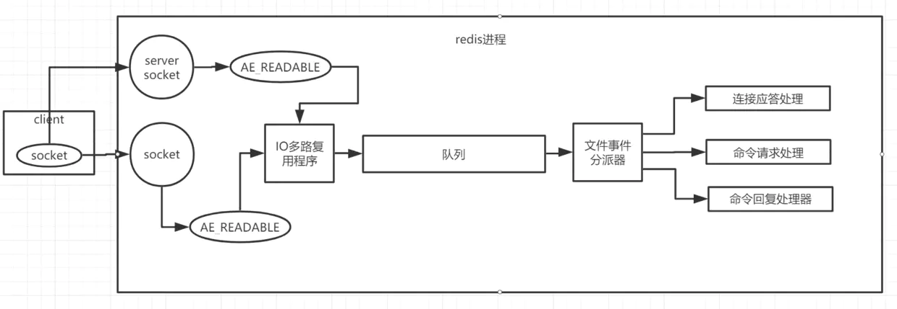
客户端与redis通信的一次流程
①在redis启动初始化的时候，redis会将连接应答处理器跟AE_READABLE事件关联起来，接着如果一个客户端跟redis发起连接，此时redis会产生一个AE_READABLE事件，然后由连接应答处理器来处理跟客户端建立连接，创建客户端响应的socket，同时将这个socket的AE_READABLE事件跟命令请求处理器关联起来。
②当客户端向redis发起请求的时候(不管是读请求还是写请求，都一样)，首先就会在socket产生一个AE_READABLE事件，然后由对应的命令请求处理器来处理。这个命令请求处理器就会从socket中读取请求的相关数据，然后执行操作和处理。
③接着redis这边准备好了给客户端的响应数据之后，就会将socket的AE_WRITABLE事件跟命令回复处理器关联起来，当客户端这边准备好读取相应数据时，就会在socket上产生一个AE_WRITABLE事件，会由相应的命令回复处理器来处理，就是将准备好的响应数据写入socket，供客户端读取。
④命令回复处理器写完之后，就会删除这个socket的AE_WRITABLE事件和命令回复处理器的关联关系。
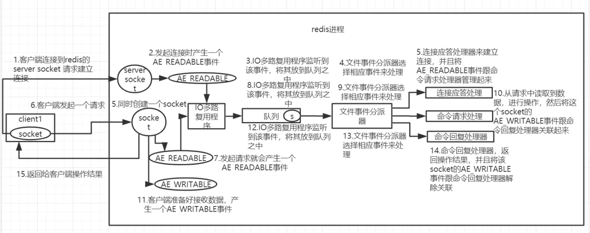
非阻塞 IO
当我们调用套接字的读写方法，默认它们是阻塞的，比如read方法要传递进去一个参数n，表示最多读取这么多字节后再返回，如果一个字节都没有，那么线程就会卡在那里，直到新的数据到来或者连接关闭了，read方法才可以返回，线程才能继续处理。而write方法一般来说不会阻塞，除非内核为套接字分配的写缓冲区已经满了，write方法就会阻塞，直到缓存区中有空闲空间挪出来了。

非阻塞 IO 在套接字对象上提供了一个选项Non_Blocking，当这个选项打开时，读写方法不会阻塞，而是能读多少读多少，能写多少写多少。能读多少取决于内核为套接字分配的读缓冲区内部的数据字节数，能写多少取决于内核为套接字分配的写缓冲区的空闲空间字节数。读方法和写方法都会通过返回值来告知程序实际读写了多少字节。
有了非阻塞 IO 意味着线程在读写 IO 时可以不必再阻塞了，读写可以瞬间完成然后线程可以继续干别的事了。
事件轮询 (多路复用)
非阻塞 IO 有个问题，那就是线程要读数据，结果读了一部分就返回了，线程如何知道何时才应该继续读。也就是当数据到来时，线程如何得到通知。写也是一样，如果缓冲区满了，写不完，剩下的数据何时才应该继续写，线程也应该得到通知。
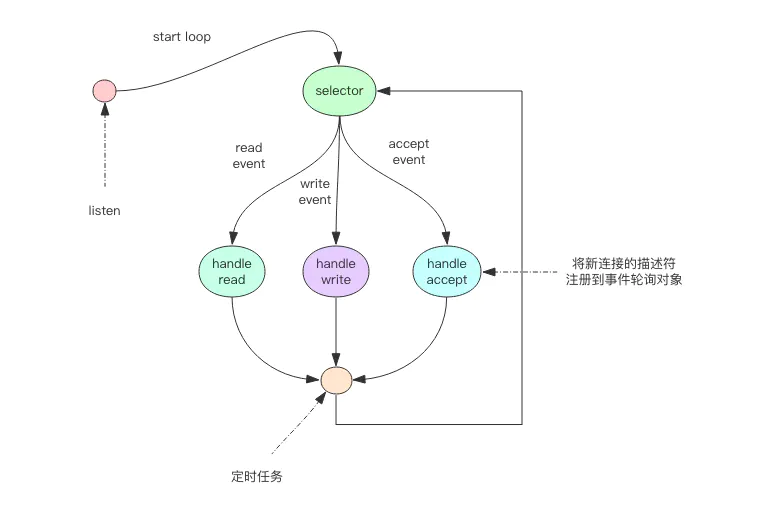
事件轮询 API 就是用来解决这个问题的，最简单的事件轮询 API 是select函数，它是操作系统提供给用户程序的 API。输入是读写描述符列表read_fds & write_fds，输出是与之对应的可读可写事件。同时还提供了一个timeout参数，如果没有任何事件到来，那么就最多等待timeout时间，线程处于阻塞状态。一旦期间有任何事件到来，就可以立即返回。时间过了之后还是没有任何事件到来，也会立即返回。拿到事件后，线程就可以继续挨个处理相应的事件。处理完了继续过来轮询。于是线程就进入了一个死循环，我们把这个死循环称为事件循环，一个循环为一个周期。
每个客户端套接字socket都有对应的读写文件描述符。
read_events, write_events = select(read_fds, write_fds, timeout)
for event in read_events:
handle_read(event.fd)
for event in write_events:
handle_write(event.fd)
handle_others() # 处理其它事情，如定时任务等
因为我们通过select系统调用同时处理多个通道描述符的读写事件，因此我们将这类系统调用称为多路复用 API。现代操作系统的多路复用 API 已经不再使用select系统调用，而改用epoll(linux)和kqueue(freebsd & macosx)，因为 select 系统调用的性能在描述符特别多时性能会非常差。它们使用起来可能在形式上略有差异，但是本质上都是差不多的，都可以使用上面的伪代码逻辑进行理解。
服务器套接字serversocket对象的读操作是指调用accept接受客户端新连接。何时有新连接到来，也是通过select系统调用的读事件来得到通知的。
事件轮询 API 就是 Java 语言里面的 NIO 技术
Java 的 NIO 并不是 Java 特有的技术，其它计算机语言都有这个技术，只不过换了一个词汇，不叫 NIO 而已。
指令队列
Redis 会将每个客户端套接字都关联一个指令队列。客户端的指令通过队列来排队进行顺序处理，先到先服务。
响应队列
Redis 同样也会为每个客户端套接字关联一个响应队列。Redis 服务器通过响应队列来将指令的返回结果回复给客户端。 如果队列为空，那么意味着连接暂时处于空闲状态，不需要去获取写事件，也就是可以将当前的客户端描述符从write_fds里面移出来。等到队列有数据了，再将描述符放进去。避免select系统调用立即返回写事件，结果发现没什么数据可以写。出这种情况的线程会飙高 CPU。
定时任务
服务器处理要响应 IO 事件外，还要处理其它事情。比如定时任务就是非常重要的一件事。如果线程阻塞在 select 系统调用上，定时任务将无法得到准时调度。那 Redis 是如何解决这个问题的呢？
Redis 的定时任务会记录在一个称为最小堆的数据结构中。这个堆中，最快要执行的任务排在堆的最上方。在每个循环周期，Redis 都会将最小堆里面已经到点的任务立即进行处理。处理完毕后，将最快要执行的任务还需要的时间记录下来，这个时间就是select系统调用的timeout参数。因为 Redis 知道未来timeout时间内，没有其它定时任务需要处理，所以定时任务可以安心睡眠timeout的时间。
Nginx 和 Node 的事件处理原理和 Redis 也是类似的
注意点
1、我们知道Redis是用”单线程-多路复用IO模型”来实现高性能的内存数据服务的，这种机制避免了使用锁，但是同时这种机制在进行sunion之类的比较耗时的命令时会使redis的并发下降。
因为是单一线程，所以同一时刻只有一个操作在进行，所以，耗时的命令会导致并发的下降，不只是读并发，写并发也会下降。而单一线程也只能用到一个CPU核心，所以可以在同一个多核的服务器中，可以启动多个实例，组成master-master或者master-slave的形式，耗时的读命令可以完全在slave进行。
原理 2：交头接耳 —— 通信协议
Redis 的作者认为数据库系统的瓶颈一般不在于网络流量，而是数据库自身内部逻辑处理上。所以即使 Redis 使用了浪费流量的文本协议，依然可以取得极高的访问性能。Redis 将所有数据都放在内存，用一个单线程对外提供服务，单个节点在跑满一个 CPU 核心的情况下可以达到了 10w/s 的超高 QPS。
RESP(Redis Serialization Protocol)
RESP 是 Redis 序列化协议的简写。它是一种直观的文本协议，优势在于实现异常简单，解析性能极好。
Redis 协议将传输的结构数据分为 5 种最小单元类型，单元结束时统一加上回车换行符号\r\n。
- 单行字符串 以
+符号开头。 - 多行字符串 以
$符号开头，后跟字符串长度。 - 整数值 以
:符号开头，后跟整数的字符串形式。 - 错误消息 以
-符号开头。 - 数组 以
*号开头，后跟数组的长度。
单行字符串 hello world
+hello world\r\n
多行字符串 hello world
$11\r\nhello world\r\n
多行字符串当然也可以表示单行字符串。
整数 1024
:1024\r\n
错误 参数类型错误
-WRONGTYPE Operation against a key holding the wrong kind of value\r\n
数组 [1,2,3]
*3\r\n:1\r\n:2\r\n:3\r\n
NULL 用多行字符串表示，不过长度要写成-1。
$-1\r\n
空串 用多行字符串表示，长度填 0。
$0\r\n\r\n
注意这里有两个\r\n。为什么是两个?因为两个\r\n之间,隔的是空串。
客户端 -> 服务器
客户端向服务器发送的指令只有一种格式，多行字符串数组。比如一个简单的 set 指令set author codehole会被序列化成下面的字符串。
*3\r\n$3\r\nset\r\n$6\r\nauthor\r\n$8\r\ncodehole\r\n
在控制台输出这个字符串如下，可以看出这是很好阅读的一种格式。
*3 //表示有三个字符串
$3 //set 长度为3
set
$6 //author长度为6
author
$8 //codehole长度为8
codehole
服务器 -> 客户端
服务器向客户端回复的响应要支持多种数据结构，所以消息响应在结构上要复杂不少。不过再复杂的响应消息也是以上 5 中基本类型的组合。
单行字符串响应
127.0.0.1:6379> set author codehole
OK
这里的 OK 就是单行响应，没有使用引号括起来。
+OK
错误响应
127.0.0.1:6379> incr author
(error) ERR value is not an integer or out of range
试图对一个字符串进行自增，服务器抛出一个通用的错误。
-ERR value is not an integer or out of range
整数响应
127.0.0.1:6379> incr books
(integer) 1
这里的1就是整数响应
:1
多行字符串响应
127.0.0.1:6379> get author
"codehole"
这里使用双引号括起来的字符串就是多行字符串响应
$8
codehole
数组响应
127.0.0.1:6379> hset info name laoqian
(integer) 1
127.0.0.1:6379> hset info age 30
(integer) 1
127.0.0.1:6379> hset info sex male
(integer) 1
127.0.0.1:6379> hgetall info
1) "name"
2) "laoqian"
3) "age"
4) "30"
5) "sex"
6) "male"
这里的 hgetall 命令返回的就是一个数组，第 0|2|4 位置的字符串是 hash 表的 key，第 1|3|5 位置的字符串是 value，客户端负责将数组组装成字典再返回。
*6
$4
name
$6
laoqian
$3
age
$2
30
$3
sex
$4
male
嵌套
127.0.0.1:6379> scan 0
1) "0"
2) 1) "info"
2) "books"
3) "author"
scan 命令用来扫描服务器包含的所有 key 列表，它是以游标的形式获取，一次只获取一部分。
scan 命令返回的是一个嵌套数组。数组的第一个值表示游标的值，如果这个值为零，说明已经遍历完毕。如果不为零，使用这个值作为 scan 命令的参数进行下一次遍历。数组的第二个值又是一个数组，这个数组就是 key 列表。
*2
$1
0
*3
$4
info
$5
books
$6
author
小结
Redis 协议里有大量冗余的回车换行符，但是这不影响它成为互联网技术领域非常受欢迎的一个文本协议。有很多开源项目使用 RESP 作为它的通讯协议。在技术领域性能并不总是一切，还有简单性、易理解性和易实现性，这些都需要进行适当权衡。
扩展阅读
如果你想自己实现一套Redis协议的解码器，请阅读老钱的另一篇文章《基于Netty实现Redis协议的编码解码器》
https://redis.io/topics/protocol
原理 3：未雨绸缪 —— 持久化
Redis 的数据全部在内存里，如果突然宕机，数据就会全部丢失，因此必须有一种机制来保证 Redis 的数据不会因为故障而丢失，这种机制就是 Redis 的持久化机制。
Redis 的持久化机制有两种，第一种是快照，第二种是 AOF 日志。快照是一次全量备份，AOF 日志是连续的增量备份。快照是内存数据的二进制序列化形式，在存储上非常紧凑，而 AOF 日志记录的是内存数据修改的指令记录文本。AOF 日志在长期的运行过程中会变的无比庞大，数据库重启时需要加载 AOF 日志进行指令重放，这个时间就会无比漫长。所以需要定期进行 AOF 重写，给 AOF 日志进行瘦身。
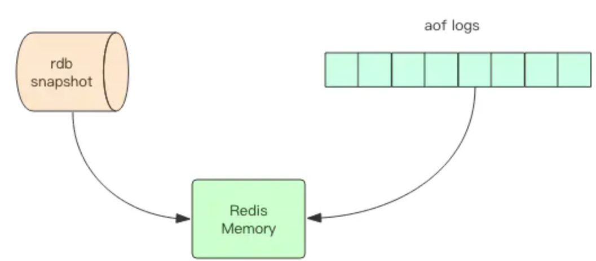
快照原理
我们知道 Redis 是单线程程序，这个线程要同时负责多个客户端套接字的并发读写操作和内存数据结构的逻辑读写。
在服务线上请求的同时，Redis 还需要进行内存快照，内存快照要求 Redis 必须进行文件 IO 操作，可文件 IO 操作是不能使用多路复用 API。
这意味着单线程同时在服务线上的请求还要进行文件 IO 操作，文件 IO 操作会严重拖垮服务器请求的性能。还有个重要的问题是为了不阻塞线上的业务，就需要边持久化边响应客户端请求。持久化的同时，内存数据结构还在改变，比如一个大型的 hash 字典正在持久化，结果一个请求过来把它给删掉了，还没持久化完呢，这尼玛要怎么搞？
那该怎么办呢？
Redis 使用操作系统的多进程 COW(Copy On Write) 机制来实现快照持久化，这个机制很有意思，也很少人知道。多进程 COW 也是鉴定程序员知识广度的一个重要指标。
fork(多进程)
Redis 在持久化时会调用 glibc 的函数fork产生一个子进程，快照持久化完全交给子进程来处理，父进程继续处理客户端请求。子进程刚刚产生时，它和父进程共享内存里面的代码段和数据段。这时你可以将父子进程想像成一个连体婴儿，共享身体。这是 Linux 操作系统的机制，为了节约内存资源，所以尽可能让它们共享起来。在进程分离的一瞬间，内存的增长几乎没有明显变化。
用 Python 语言描述进程分离的逻辑如下。fork函数会在父子进程同时返回，在父进程里返回子进程的 pid，在子进程里返回零。如果操作系统内存资源不足，pid 就会是负数，表示fork失败。
pid = os.fork()
if pid > 0:
handle_client_requests() # 父进程继续处理客户端请求
if pid == 0:
handle_snapshot_write() # 子进程处理快照写磁盘
if pid < 0:
# fork error
子进程做数据持久化，它不会修改现有的内存数据结构，它只是对数据结构进行遍历读取，然后序列化写到磁盘中。但是父进程不一样，它必须持续服务客户端请求，然后对内存数据结构进行不间断的修改。
这个时候就会使用操作系统的 COW 机制来进行数据段页面的分离。数据段是由很多操作系统的页面组合而成，当父进程对其中一个页面的数据进行修改时，会将被共享的页面复制一份分离出来，然后对这个复制的页面进行修改。这时子进程相应的页面是没有变化的，还是进程产生时那一瞬间的数据。
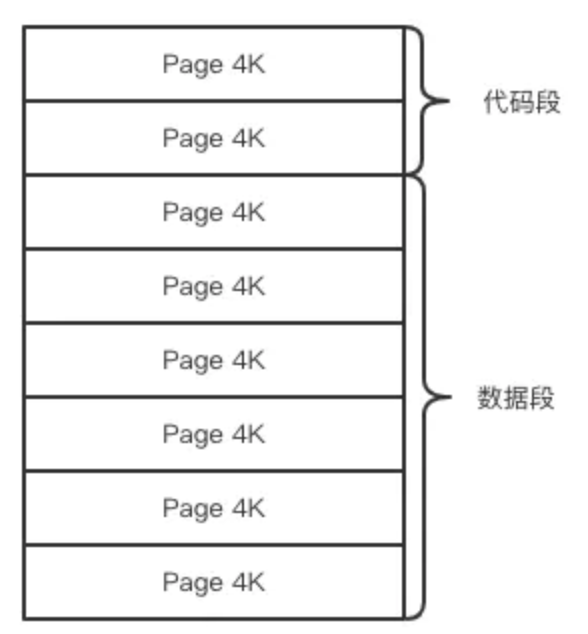
随着父进程修改操作的持续进行，越来越多的共享页面被分离出来，内存就会持续增长。但是也不会超过原有数据内存的 2 倍大小。另外一个 Redis 实例里冷数据占的比例往往是比较高的，所以很少会出现所有的页面都会被分离，被分离的往往只有其中一部分页面。每个页面的大小只有 4K，一个 Redis 实例里面一般都会有成千上万的页面。
子进程因为数据没有变化，它能看到的内存里的数据在进程产生的一瞬间就凝固了，再也不会改变，这也是为什么 Redis 的持久化叫「快照」的原因。接下来子进程就可以非常安心的遍历数据了进行序列化写磁盘了。
AOF 原理
AOF 日志存储的是 Redis 服务器的顺序指令序列，AOF 日志只记录对内存进行修改的指令记录。
假设 AOF 日志记录了自 Redis 实例创建以来所有的修改性指令序列，那么就可以通过对一个空的 Redis 实例顺序执行所有的指令，也就是「重放」，来恢复 Redis 当前实例的内存数据结构的状态。
Redis 会在收到客户端修改指令后，进行参数校验进行逻辑处理后，如果没问题，就立即将该指令文本存储到 AOF 日志中，也就是先执行指令才将日志存盘。这点不同于leveldb、hbase等存储引擎，它们都是先存储日志再做逻辑处理。
Redis 在长期运行的过程中，AOF 的日志会越变越长。如果实例宕机重启，重放整个 AOF 日志会非常耗时，导致长时间 Redis 无法对外提供服务。所以需要对 AOF 日志瘦身。
AOF 重写
Redis 提供了 bgrewriteaof 指令用于对 AOF 日志进行瘦身。其原理就是开辟一个子进程对内存进行遍历转换成一系列 Redis 的操作指令，序列化到一个新的 AOF 日志文件中。序列化完毕后再将操作期间发生的增量 AOF 日志追加到这个新的 AOF 日志文件中，追加完毕后就立即替代旧的 AOF 日志文件了，瘦身工作就完成了。
fsync
AOF 日志是以文件的形式存在的，当程序对 AOF 日志文件进行写操作时，实际上是将内容写到了内核为文件描述符分配的一个内存缓存中，然后内核会异步将脏数据刷回到磁盘的。
这就意味着如果机器突然宕机，AOF 日志内容可能还没有来得及完全刷到磁盘中，这个时候就会出现日志丢失。那该怎么办？
Linux 的glibc提供了fsync(int fd)函数可以将指定文件的内容强制从内核缓存刷到磁盘。只要 Redis 进程实时调用 fsync 函数就可以保证 aof 日志不丢失。但是 fsync 是一个磁盘 IO 操作，它很慢！如果 Redis 执行一条指令就要 fsync 一次，那么 Redis 高性能的地位就不保了。
所以在生产环境的服务器中，Redis 通常是每隔 1s 左右执行一次 fsync 操作，周期 1s 是可以配置的。这是在数据安全性和性能之间做了一个折中，在保持高性能的同时，尽可能使得数据少丢失。
Redis 同样也提供了另外两种策略，一个是永不 fsync——让操作系统来决定何时同步磁盘，很不安全，另一个是来一个指令就 fsync 一次——非常慢。但是在生产环境基本不会使用，了解一下即可。
运维
快照是通过开启子进程的方式进行的，它是一个比较耗资源的操作。
- 遍历整个内存，大块写磁盘会加重系统负载
- AOF 的 fsync 是一个耗时的 IO 操作，它会降低 Redis 性能，同时也会增加系统 IO 负担
所以通常 Redis 的主节点是不会进行持久化操作，持久化操作主要在从节点进行。从节点是备份节点，没有来自客户端请求的压力，它的操作系统资源往往比较充沛。
但是如果出现网络分区，从节点长期连不上主节点，就会出现数据不一致的问题，特别是在网络分区出现的情况下又不小心主节点宕机了，那么数据就会丢失，所以在生产环境要做好实时监控工作，保证网络畅通或者能快速修复。另外还应该再增加一个从节点以降低网络分区的概率，只要有一个从节点数据同步正常，数据也就不会轻易丢失。
Redis 4.0 混合持久化
重启 Redis 时，我们很少使用 rdb 来恢复内存状态，因为会丢失大量数据(rdb备份/持久化是间隔执行的)。我们通常使用 AOF 日志重放，但是重放 AOF 日志性能相对 rdb 来说要慢很多，这样在 Redis 实例很大的情况下，启动需要花费很长的时间。
Redis 4.0 为了解决这个问题，带来了一个新的持久化选项——混合持久化。将 rdb 文件的内容和增量的 AOF 日志文件存在一起。这里的 AOF 日志不再是全量的日志，而是自持久化开始到持久化结束的这段时间发生的增量 AOF 日志，通常这部分 AOF 日志很小。

于是在 Redis 重启的时候，可以先加载 rdb 的内容，然后再重放增量 AOF 日志就可以完全替代之前的 AOF 全量文件重放，重启效率因此大幅得到提升。
扩展阅读 COW奶牛！Copy On Write机制了解一下
原理 4：雷厉风行 —— 管道
大多数同学一直以来对 Redis 管道有一个误解，他们以为这是 Redis 服务器提供的一种特别的技术，有了这种技术就可以加速 Redis 的存取效率。但是实际上 Redis 管道 (Pipeline) 本身并不是 Redis 服务器直接提供的技术，这个技术本质上是由客户端提供的，跟服务器没有什么直接的关系。下面我们对这块做一个深入探究。
Redis 的消息交互
当我们使用客户端对 Redis 进行一次操作时，如下图所示，客户端将请求传送给服务器，服务器处理完毕后，再将响应回复给客户端。这要花费一个网络数据包来回的时间。

如果连续执行多条指令，那就会花费多个网络数据包来回的时间。如下图所示。

回到客户端代码层面，客户端是经历了写-读-写-读四个操作才完整地执行了两条指令

现在如果我们调整读写顺序，改成写—写-读-读，这两个指令同样可以正常完成。

两个连续的写操作和两个连续的读操作总共只会花费一次网络来回，就好比连续的 write 操作合并了，连续的 read 操作也合并了一样。

这便是管道操作的本质，服务器根本没有任何区别对待，还是收到一条消息，执行一条消息，回复一条消息的正常的流程。客户端通过对管道中的指令列表改变读写顺序就可以大幅节省 IO 时间。管道中指令越多，效果越好。
这里我本来有个疑问：如果把操作顺序改了,那么执行结果也会不一样吧(会错)。比如原来没有A，read的时候没有A,提前write了，查出来的结果就有A了。
答： 这个读写并非指的是命令，任何一个Redis命令在发起时，都会经过 客户端写 -> 服务端读 -> 服务端写 ->客户端读 的过程。 pipeline通过减少客户端与redis的通信次数来实现降低往返延时时间，而且Pipeline 实现的原理是队列，就是说可以把多条指令放入到一个tcp报文一起发送，server则可以将三条命令的处理结果放到一个tcp报文返回。 结果并不会错
管道压力测试
接下来我们实践一下管道的力量。
Redis 自带了一个压力测试工具redis-benchmark，使用这个工具就可以进行管道测试。
首先我们对一个普通的 set 指令进行压测，QPS 大约 5w/s。
> redis-benchmark -t set -q
SET: 51975.05 requests per second
我们加入管道选项-P参数，它表示单个管道内并行的请求数量，看下面P=2，QPS 达到了 9w/s。
> redis-benchmark -t set -P 2 -q
SET: 91240.88 requests per second
再看看P=3，QPS 达到了 10w/s。
SET: 102354.15 requests per second
但如果再继续提升 P 参数，发现 QPS 已经上不去了。这是为什么呢？
因为这里 CPU 处理能力已经达到了瓶颈，Redis 的单线程 CPU 已经飙到了 100%，所以无法再继续提升了。
深入理解管道本质
接下来我们深入分析一个请求交互的流程，真实的情况是它很复杂，因为要经过网络协议栈，这个就得深入内核了。

上图就是一个完整的请求交互流程图。我用文字来仔细描述一遍：
- 客户端进程调用
write将消息写到操作系统内核为套接字分配的发送缓冲send buffer。 - 客户端操作系统内核将发送缓冲的内容发送到网卡，网卡硬件将数据通过「网际路由」送到服务器的网卡。
- 服务器操作系统内核将网卡的数据放到内核为套接字分配的接收缓冲
recv buffer。 - 服务器进程调用
read从接收缓冲中取出消息进行处理。 - 服务器进程调用
write将响应消息写到内核为套接字分配的发送缓冲send buffer。 - 服务器操作系统内核将发送缓冲的内容发送到网卡，网卡硬件将数据通过「网际路由」送到客户端的网卡。
- 客户端操作系统内核将网卡的数据放到内核为套接字分配的接收缓冲
recv buffer。 - 客户端进程调用
read从接收缓冲中取出消息返回给上层业务逻辑进行处理。 - 结束。
其中步骤 5~8 和 1~4 是一样的，只不过方向是反过来的，一个是请求，一个是响应。
我们开始以为 write 操作是要等到对方收到消息才会返回，但实际上不是这样的。write 操作只负责将数据写到本地操作系统内核的发送缓冲然后就返回了。剩下的事交给操作系统内核异步将数据送到目标机器。但是如果发送缓冲满了，那么就需要等待缓冲空出空闲空间来，这个就是写操作 IO 操作的真正耗时。
我们开始以为 read 操作是从目标机器拉取数据，但实际上不是这样的。read 操作只负责将数据从本地操作系统内核的接收缓冲中取出来就了事了。但是如果缓冲是空的，那么就需要等待数据到来，这个就是读操作 IO 操作的真正耗时。
所以对于value = redis.get(key)这样一个简单的请求来说，write操作几乎没有耗时，直接写到发送缓冲就返回，而read就会比较耗时了，因为它要等待消息经过网络路由到目标机器处理后的响应消息,再回送到当前的内核读缓冲才可以返回。这才是一个网络来回的真正开销。
而对于管道来说，连续的write操作根本就没有耗时，之后第一个read操作会等待一个网络的来回开销，然后所有的响应消息就都已经回送到内核的读缓冲了，后续的 read 操作直接就可以从缓冲拿到结果，瞬间就返回了。
小结
这就是管道的本质了，它并不是服务器的什么特性，而是客户端通过改变了读写的顺序带来的性能的巨大提升。
原理 5：同舟共济 —— 事务
为了确保连续多个操作的原子性，一个成熟的数据库通常都会有事务支持，Redis 也不例外。Redis 的事务使用非常简单，不同于关系数据库，我们无须理解那么多复杂的事务模型，就可以直接使用。不过也正是因为这种简单性，它的事务模型很不严格，这要求我们不能像使用关系数据库的事务一样来使用 Redis。
Redis 事务的基本使用
每个事务的操作都有 begin、commit 和 rollback，begin 指示事务的开始，commit 指示事务的提交，rollback 指示事务的回滚。它大致的形式如下。
begin();
try {
command1();
command2();
....
commit();
} catch(Exception e) {
rollback();
}
Redis 在形式上看起来也差不多，分别是 multi/exec/discard。multi 指示事务的开始，exec 指示事务的执行，discard 指示事务的丢弃。
> multi
OK
> incr books
QUEUED
> incr books
QUEUED
> exec
(integer) 1
(integer) 2
上面的指令演示了一个完整的事务过程，所有的指令在 exec 之前不执行，而是缓存在服务器的一个事务队列中，服务器一旦收到 exec 指令，才开执行整个事务队列，执行完毕后一次性返回所有指令的运行结果。因为 Redis 的单线程特性，它不用担心自己在执行队列的时候被其它指令打搅，可以保证他们能得到的「原子性」执行。
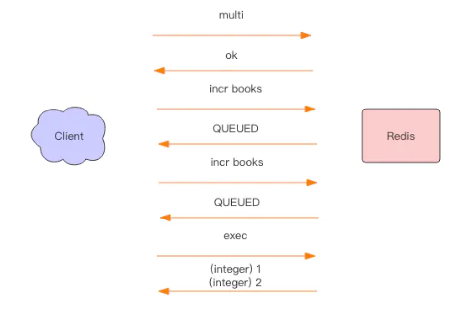
上图显示了以上事务过程完整的交互效果。QUEUED 是一个简单字符串，同 OK 是一个形式，它表示指令已经被服务器缓存到队列里了。
原子性
事务的原子性是指要么事务全部成功，要么全部失败，那么 Redis 事务执行是原子性的么？
下面我们来看一个特别的例子。
> multi
OK
> set books iamastring
QUEUED
> incr books
QUEUED
> set poorman iamdesperate
QUEUED
> exec
1) OK
2) (error) ERR value is not an integer or out of range
3) OK
> get books
"iamastring"
> get poorman
"iamdesperate
上面的例子是事务执行到中间遇到失败了，因为我们不能对一个字符串进行数学运算，事务在遇到指令执行失败后，后面的指令还继续执行，所以 poorman 的值能继续得到设置。
到这里，你应该明白 Redis 的事务根本不能算「原子性」，而仅仅是满足了事务的「隔离性」，隔离性中的串行化——当前执行的事务有着不被其它事务打断的权利。
discard(丢弃)
Redis 为事务提供了一个 discard 指令，用于丢弃事务缓存队列中的所有指令，在 exec 执行之前。
> get books
(nil)
> multi
OK
> incr books
QUEUED
> incr books
QUEUED
> discard
OK
> get books
(nil)
我们可以看到 discard 之后，队列中的所有指令都没执行，就好像 multi 和 discard 中间的所有指令从未发生过一样。
优化
上面的 Redis 事务在发送每个指令到事务缓存队列时都要经过一次网络读写，当一个事务内部的指令较多时，需要的网络 IO 时间也会线性增长。所以通常 Redis 的客户端在执行事务时都会结合 pipeline 一起使用，这样可以将多次 IO 操作压缩为单次 IO 操作。比如我们在使用 Python 的 Redis 客户端时执行事务时是要强制使用 pipeline 的。
pipe = redis.pipeline(transaction=true)
pipe.multi()
pipe.incr("books")
pipe.incr("books")
values = pipe.execute()
Watch
考虑到一个业务场景，Redis 存储了我们的账户余额数据，它是一个整数。现在有两个并发的客户端要对账户余额进行修改操作，这个修改不是一个简单的 incrby 指令，而是要对余额乘以一个倍数。Redis 可没有提供 multiplyby 这样的指令。我们需要先取出余额然后在内存里乘以倍数，再将结果写回 Redis。
这就会出现并发问题，因为有多个客户端会并发进行操作。我们可以通过 Redis 的分布式锁来避免冲突，这是一个很好的解决方案。分布式锁是一种悲观锁，那是不是可以使用乐观锁的方式来解决冲突呢？
Redis 提供了这种 watch 的机制，它就是一种乐观锁。有了 watch 我们又多了一种可以用来解决并发修改的方法。
Redis Watch 命令用于监视一个(或多个) key ，如果在事务执行之前这个(或这些) key 被其他命令所改动，那么事务将被打断
watch 的使用方式如下：
while True:
do_watch()
commands()
multi()
send_commands()
try:
exec()
break
except WatchError:
continue
watch 会在事务开始之前盯住 1 个或多个关键变量，当事务执行时，也就是服务器收到了 exec 指令要顺序执行缓存的事务队列时，Redis 会检查关键变量自 watch 之后，是否被修改了 (包括当前事务所在的客户端)。如果关键变量被人动过了，exec 指令就会返回 null 回复告知客户端事务执行失败，这个时候客户端一般会选择重试。
> watch books
OK
> incr books # 被修改了
(integer) 1
> multi
OK
> incr books
QUEUED
> exec # 事务执行失败
(nil)
当服务器给 exec 指令返回一个 null 回复时，客户端知道了事务执行是失败的，通常客户端 (redis-py) 都会抛出一个 WatchError 这种错误，不过也有些语言 (jedis) 不会抛出异常，而是通过在 exec 方法里返回一个 null，这样客户端需要检查一下返回结果是否为 null 来确定事务是否执行失败。
注意事项
Redis 禁止在 multi 和 exec 之间执行 watch 指令，而必须在 multi 之前做好盯住关键变量，否则会出错。
接下来我们使用 Python 语言来实现对余额的加倍操作。
# -*- coding: utf-8
import redis
def key_for(user_id):
return "account_{}".format(user_id)
def double_account(client, user_id):
key = key_for(user_id)
while True:
pipe = client.pipeline(transaction=True)
pipe.watch(key)
value = int(pipe.get(key))
value *= 2 # 加倍
pipe.multi()
pipe.set(key, value)
try:
pipe.execute()
break # 总算成功了
except redis.WatchError:
continue # 事务被打断了，重试
return int(client.get(key)) # 重新获取余额
client = redis.StrictRedis()
user_id = "abc"
client.setnx(key_for(user_id), 5) # setnx 做初始化
print double_account(client, user_id)
下面我们再使用 Java 语言实现一遍。
import java.util.List;
import redis.clients.jedis.Jedis;
import redis.clients.jedis.Transaction;
public class TransactionDemo {
public static void main(String[] args) {
Jedis jedis = new Jedis();
String userId = "abc";
String key = keyFor(userId);
jedis.setnx(key, String.valueOf(5)); # setnx 做初始化
System.out.println(doubleAccount(jedis, userId));
jedis.close();
}
public static int doubleAccount(Jedis jedis, String userId) {
String key = keyFor(userId);
while (true) {
jedis.watch(key);
int value = Integer.parseInt(jedis.get(key));
value *= 2; // 加倍
Transaction tx = jedis.multi();
tx.set(key, String.valueOf(value));
List<Object> res = tx.exec();
if (res != null) {
break; // 成功了
}
}
return Integer.parseInt(jedis.get(key)); // 重新获取余额
}
public static String keyFor(String userId) {
return String.format("account_%s", userId);
}
}
我们常常听说 Python 的代码要比 Java 简短太多，但是从这个例子中我们看到 Java 的代码比 python 的代码也多不了多少，大约只多出 50%。
原理 6：小道消息 —— PubSub
前面我们讲了 Redis 消息队列的使用方法，但是没有提到 Redis 消息队列的不足之处，那就是它不支持消息的多播机制。
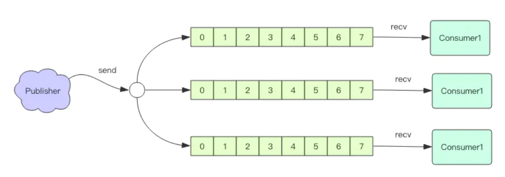
消息多播
消息多播允许生产者生产一次消息，中间件负责将消息复制到多个消息队列，每个消息队列由相应的消费组进行消费。它是分布式系统常用的一种解耦方式，用于将多个消费组的逻辑进行拆分。支持了消息多播，多个消费组的逻辑就可以放到不同的子系统中。
如果是普通的消息队列，就得将多个不同的消费组逻辑串接起来放在一个子系统中，进行连续消费。
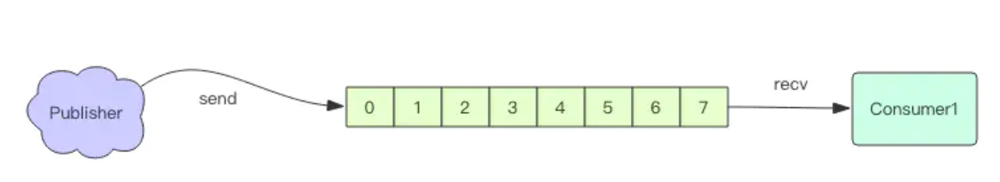
PubSub
为了支持消息多播，Redis 不能再依赖于那 5 种基本数据类型了。它单独使用了一个模块来支持消息多播，这个模块的名字叫着 PubSub，也就是 PublisherSubscriber，发布者订阅者模型。我们使用 Python 语言来演示一下 PubSub 如何使用。
# -*- coding: utf-8 -*-
import time
import redis
client = redis.StrictRedis()
p = client.pubsub()
p.subscribe("codehole")
time.sleep(1)
print p.get_message()
client.publish("codehole", "java comes")
time.sleep(1)
print p.get_message()
client.publish("codehole", "python comes")
time.sleep(1)
print p.get_message()
print p.get_message()
{'pattern': None, 'type': 'subscribe', 'channel': 'codehole', 'data': 1L}
{'pattern': None, 'type': 'message', 'channel': 'codehole', 'data': 'java comes'}
{'pattern': None, 'type': 'message', 'channel': 'codehole', 'data': 'python comes'}

客户端发起订阅命令后，Redis 会立即给予一个反馈消息通知订阅成功。因为有网络传输延迟，在 subscribe``get\_message``publish``get\_message``get\_message
Redis PubSub 的生产者和消费者是不同的连接，也就是上面这个例子实际上使用了两个 Redis 的连接。这是必须的，因为 Redis 不允许连接在 subscribe 等待消息时还要进行其它的操作。
在生产环境中，我们很少将生产者和消费者放在同一个线程里。如果它们真要在同一个线程里，何必通过中间件来流转，直接使用函数调用就行。所以我们应该将生产者和消费者分离，接下来我们看看分离后的代码要怎么写。
消费者
# -*- coding: utf-8 -*-
import time
import redis
client = redis.StrictRedis()
p = client.pubsub()
p.subscribe("codehole")
while True:
msg = p.get_message()
if not msg:
time.sleep(1)
continue
print msg
生产者
# -*- coding: utf-8 -*-
import redis
client = redis.StrictRedis()
client.publish("codehole", "python comes")
client.publish("codehole", "java comes")
client.publish("codehole", "golang comes")
必须先启动消费者，然后再执行生产者，消费者我们可以启动多个，pubsub 会保证它们收到的是相同的消息序列。
{'pattern': None, 'type': 'subscribe', 'channel': 'codehole', 'data': 1L}
{'pattern': None, 'type': 'message', 'channel': 'codehole', 'data': 'python comes'}
{'pattern': None, 'type': 'message', 'channel': 'codehole', 'data': 'java comes'}
{'pattern': None, 'type': 'message', 'channel': 'codehole', 'data': 'golang comes'}
我们从消费者的控制台窗口可以看到上面的输出，每个消费者窗口都是同样的输出。第一行是订阅成功消息，它很快就会输出，后面的三行会在生产者进程执行的时候立即输出。 上面的消费者是通过轮询 get_message 来收取消息的，如果收取不到就休眠 1s。这让我们想起了第 3 节的消息队列模型，我们使用 blpop 来代替休眠来提高消息处理的及时性。
PubSub 的消费者如果使用休眠的方式来轮询消息，也会遭遇消息处理不及时的问题。不过我们可以使用 listen 来阻塞监听消息来进行处理，这点同 blpop 原理是一样的。下面我们改造一下消费者
阻塞消费者
# -*- coding: utf-8 -*-
import time
import redis
client = redis.StrictRedis()
p = client.pubsub()
p.subscribe("codehole")
for msg in p.listen():
print msg
代码简短了很多，不需要再休眠了，消息处理也及时了。
模式订阅
上面提到的订阅模式是基于名称订阅的，消费者订阅一个主题是必须明确指定主题的名称。如果我们想要订阅多个主题，那就 subscribe 多个名称。
> subscribe codehole.image codehole.text codehole.blog # 同时订阅三个主题，会有三条订阅成功反馈信息
1) "subscribe"
2) "codehole.image"
3) (integer) 1
1) "subscribe"
2) "codehole.text"
3) (integer) 2
1) "subscribe"
2) "codehole.blog"
3) (integer) 3
这样生产者向这三个主题发布的消息，这个消费者都可以接收到。
> publish codehole.image https://www.google.com/dudo.png
(integer) 1
> publish codehole.text " 你好，欢迎加入码洞 "
(integer) 1
> publish codehole.blog '{"content": "hello, everyone", "title": "welcome"}'
(integer) 1
如果现在要增加一个主题codehole.group，客户端必须也跟着增加一个订阅指令才可以收到新开主题的消息推送。
为了简化订阅的繁琐，redis 提供了模式订阅功能Pattern Subscribe，这样就可以一次订阅多个主题，即使生产者新增加了同模式的主题，消费者也可以立即收到消息
> psubscribe codehole.* # 用模式匹配一次订阅多个主题，主题以 codehole. 字符开头的消息都可以收到
1) "psubscribe"
2) "codehole.*"
3) (integer) 1
消息结构
前面的消费者消息输出时都是下面的这样一个字典形式
{'pattern': None, 'type': 'subscribe', 'channel': 'codehole', 'data': 1L}
{'pattern': None, 'type': 'message', 'channel': 'codehole', 'data': 'python comes'}
{'pattern': None, 'type': 'message', 'channel': 'codehole', 'data': 'java comes'}
{'pattern': None, 'type': 'message', 'channel': 'codehole', 'data': 'golang comes'}
那这几个字段是什么含义呢？
data 这个毫无疑问就是消息的内容，一个字符串。
channel 这个也很明显，它表示当前订阅的主题名称。
type 它表示消息的类型，如果是一个普通的消息，那么类型就是 message，如果是控制消息，比如订阅指令的反馈，它的类型就是 subscribe，如果是模式订阅的反馈，它的类型就是 psubscribe，还有取消订阅指令的反馈 unsubscribe 和 punsubscribe。
pattern 它表示当前消息是使用哪种模式订阅到的，如果是通过 subscribe 指令订阅的，那么这个字段就是空。
PubSub 缺点
PubSub 的生产者传递过来一个消息，Redis 会直接找到相应的消费者传递过去。如果一个消费者都没有，那么消息直接丢弃。如果开始有三个消费者，一个消费者突然挂掉了，生产者会继续发送消息，另外两个消费者可以持续收到消息。但是挂掉的消费者重新连上的时候，这断连期间生产者发送的消息，对于这个消费者来说就是彻底丢失了。
如果 Redis 停机重启，PubSub 的消息是不会持久化的，毕竟 Redis 宕机就相当于一个消费者都没有，所有的消息直接被丢弃。
正是因为 PubSub 有这些缺点，它几乎找不到合适的应用场景。所以 Redis 的作者单独开启了一个项目 Disque 专门用来做多播消息队列。该项目目前没有成熟，一直长期处于 Beta 版本，但是相应的客户端 sdk 已经非常丰富了，就待 Redis 作者临门一脚发布一个 Release 版本。关于 Disque 的更多细节，本小册不会多做详细介绍，感兴趣的同学可以去阅读相关文档。
补充
近期 Redis5.0 新增了 Stream 数据结构，这个功能给 Redis 带来了持久化消息队列，从此 PubSub 可以消失了，Disqueue 估计也永远发不出它的 Release 版本了。具体内容请读者阅读 Stream 章节内容（第 23 节）。
Redis的初衷是解决应用的性能问题，虽然，也有一些针对特定场景的功能，不过有些比较鸡肋，小需求能满足，完善的功能就不如更专业的其他中间件了！ 例如MQ
原理 7：开源节流 —— 小对象压缩
Redis 是一个非常耗费内存的数据库，它所有的数据都放在内存里。如果我们不注意节约使用内存，Redis 就会因为我们的无节制使用出现内存不足而崩溃。Redis 作者为了优化数据结构的内存占用，也苦心孤诣增加了非常多的优化点，这些优化也是以牺牲代码的可读性为代价的，但是毫无疑问这是非常值得的，尤其像 Redis 这种数据库。
32bit vs 64bit
Redis 如果使用 32bit 进行编译，内部所有数据结构所使用的指针空间占用会少一半，如果你对 Redis 使用内存不超过 4G，可以考虑使用 32bit 进行编译，可以节约大量内存。4G 的容量作为一些小型站点的缓存数据库是绰绰有余了，如果不足还可以通过增加实例的方式来解决。
小对象压缩存储 (ziplist)
如果 Redis 内部管理的集合数据结构很小，它会使用紧凑存储形式压缩存储。
这就好比 HashMap 本来是二维结构，但是如果内部元素比较少，使用二维结构反而浪费空间，还不如使用一维数组进行存储，需要查找时，因为元素少进行遍历也很快，甚至可以比 HashMap 本身的查找还要快。比如下面我们可以使用数组来模拟 HashMap 的增删改操作。
public class ArrayMap<K, V> {
private List<K> keys = new ArrayList<>();
private List<V> values = new ArrayList<>();
public V put(K k, V v) {
for (int i = 0; i < keys.size(); i++) {
if (keys.get(i).equals(k)) {
V oldv = values.get(i);
values.set(i, v);
return oldv;
}
}
keys.add(k);
values.add(v);
return null;
}
public V get(K k) {
for (int i = 0; i < keys.size(); i++) {
if (keys.get(i).equals(k)) {
return values.get(i);
}
}
return null;
}
public V delete(K k) {
for (int i = 0; i < keys.size(); i++) {
if (keys.get(i).equals(k)) {
keys.remove(i);
return values.remove(i);
}
}
return null;
}
}
Redis 的 ziplist 是一个紧凑的字节数组结构，如下图所示，每个元素之间都是紧挨着的。我们不用过于关心 zlbytes/zltail 和 zlend 的含义，稍微了解一下就好。
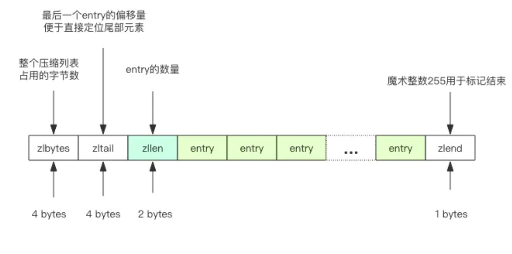
如果它存储的是 hash 结构，那么 key 和 value 会作为两个 entry 相邻存在一起。
127.0.0.1:6379> hset hello a 1
(integer) 1
127.0.0.1:6379> hset hello b 2
(integer) 1
127.0.0.1:6379> hset hello c 3
(integer) 1
127.0.0.1:6379> object encoding hello
"ziplist"
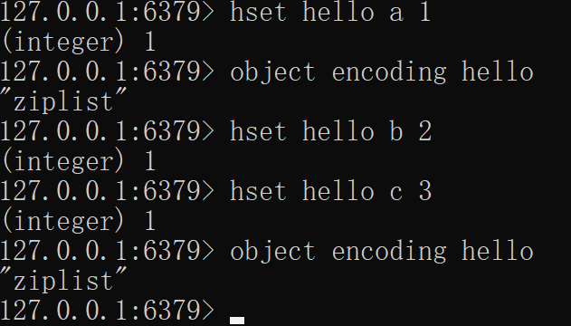
如果它存储的是 zset，那么 value 和 score 会作为两个 entry 相邻存在一起。
127.0.0.1:6379> zadd world 1 a
(integer) 1
127.0.0.1:6379> zadd world 2 b
(integer) 1
127.0.0.1:6379> zadd world 3 c
(integer) 1
127.0.0.1:6379> object encoding world
"ziplist"
关于压缩列表更多细节，请阅读第34节《极度深寒 —— 探索「列表」内部结构》和第35节《极度深寒 —— 探索「紧凑列表」内部》
Redis 的 intset 是一个紧凑的整数数组结构，它用于存放元素都是整数的并且元素个数较少的 set 集合。
如果整数可以用 uint16 表示，那么 intset 的元素就是 16 位的数组，如果新加入的整数超过了 uint16 的表示范围，那么就使用 uint32 表示，如果新加入的元素超过了 uint32 的表示范围，那么就使用 uint64 表示，Redis 支持 set 集合动态从 uint16 升级到 uint32，再升级到 uint64。

127.0.0.1:6379> sadd hello 1 2 3
(integer) 3
127.0.0.1:6379> object encoding hello
"intset"

如果 set 里存储的是字符串，那么 sadd 立即升级为 hashtable 结构。还记得 Java 的 HashSet 么，它内部是使用 HashMap 实现的。
127.0.0.1:6379> sadd hello yes no
(integer) 2
127.0.0.1:6379> object encoding hello
"hashtable"
存储界限 当集合对象的元素不断增加，或者某个 value 值过大，这种小对象存储也会被升级为标准结构。Redis 规定在小对象存储结构的限制条件如下：
hash-max-ziplist-entries 512 # hash 的元素个数超过 512 就必须用标准结构存储
hash-max-ziplist-value 64 # hash 的任意元素的 key/value 的长度超过 64 就必须用标准结构存储
list-max-ziplist-entries 512 # list 的元素个数超过 512 就必须用标准结构存储
list-max-ziplist-value 64 # list 的任意元素的长度超过 64 就必须用标准结构存储
zset-max-ziplist-entries 128 # zset 的元素个数超过 128 就必须用标准结构存储
zset-max-ziplist-value 64 # zset 的任意元素的长度超过 64 就必须用标准结构存储
set-max-intset-entries 512 # set 的整数元素个数超过 512 就必须用标准结构存储
接下来我们做一个小实验，看看这里的界限是不是真的起到作用了。
import redis
client = redis.StrictRedis()
client.delete("hello")
for i in range(512):
client.hset("hello", str(i), str(i))
print client.object("encoding", "hello") # 获取对象的存储结构
client.hset("hello", "512", "512")
print client.object("encoding", "hello") # 再次获取对象的存储结构
输出：
ziplist
hashtable
可以看出来当 hash 结构的元素个数超过 512 的时候，存储结构就发生了变化。
接下来我们再试试递增 value 的长度，在 Python 里面对字符串乘以一个整数 n 相当于重复 n 次。
import redis
client = redis.StrictRedis()
client.delete("hello")
for i in range(64):
client.hset("hello", str(i), "0" * (i+1))
print client.object("encoding", "hello") # 获取对象的存储结构
client.hset("hello", "512", "0" * 65)
print client.object("encoding", "hello") # 再次获取对象的存储结构
输出：
ziplist
hashtable
可以看出来当 hash 结构的任意 entry 的 value 值超过了 64，存储结构就升级成标准结构了。
内存回收机制
Redis 并不总是可以将空闲内存立即归还给操作系统。
如果当前 Redis 内存有 10G，当你删除了 1GB 的 key 后，再去观察内存，你会发现内存变化不会太大。( 面试题: redis删除很多key, 内存不减少的原因? ) 原因是操作系统回收内存是以页为单位，如果这个页上只要有一个 key 还在使用，那么它就不能被回收。Redis 虽然删除了 1GB 的 key，但是这些 key 分散到了很多页面中，每个页面都还有其它 key 存在，这就导致了内存不会立即被回收。
不过，如果你执行 flushdb，然后再观察内存会发现内存确实被回收了。原因是所有的 key 都干掉了，大部分之前使用的页面都完全干净了，会立即被操作系统回收。
Redis 虽然无法保证立即回收已经删除的 key 的内存，但是它会重用那些尚未回收的空闲内存。这就好比电影院里虽然人走了，但是座位还在，下一波观众来了，直接坐就行。而操作系统回收内存就好比把座位都给搬走了。这个比喻是不是很 6？
内存分配算法
内存分配是一个非常复杂的课题，需要适当的算法划分内存页，需要考虑内存碎片，需要平衡性能和效率。
Redis 为了保持自身结构的简单性，在内存分配这里直接做了甩手掌柜，将内存分配的细节丢给了第三方内存分配库去实现。目前 Redis 可以使用 jemalloc(facebook) 库来管理内存，也可以切换到tcmalloc(google)。因为 jemalloc 相比 tcmalloc的性能要稍好一些，所以Redis默认使用了jemalloc。
127.0.0.1:6379> info memory
# Memory
used_memory:809608
used_memory_human:790.63K
used_memory_rss:8232960
used_memory_peak:566296608
used_memory_peak_human:540.06M
used_memory_lua:36864
mem_fragmentation_ratio:10.17
mem_allocator:jemalloc-3.6.0
通过info memory指令可以看到 Redis 的mem_allocator使用了 jemalloc。

扩展阅读
原理 8：有备无患 —— 主从同步
很多企业都没有使用到 Redis 的集群，但是至少都做了主从。有了主从，当 master 挂掉的时候，运维让从库过来接管，服务就可以继续，否则 master 需要经过数据恢复和重启的过程，这就可能会拖很长的时间，影响线上业务的持续服务。
在了解 Redis 的主从复制之前，让我们先来理解一下现代分布式系统的理论基石——CAP 原理。
CAP 原理
CAP 原理就好比分布式领域的牛顿定律，它是分布式存储的理论基石。自打 CAP 的论文发表之后，分布式存储中间件犹如雨后春笋般一个一个涌现出来。理解这个原理其实很简单，本节我们首先对这个原理进行一些简单的讲解。
- C - Consistent ，一致性
- A - Availability ，可用性
- P - Partition tolerance ，分区容忍性
分布式系统的节点往往都是分布在不同的机器上进行网络隔离开的，这意味着必然会有网络断开的风险，这个网络断开的场景的专业词汇叫着「网络分区」。
在网络分区发生时，两个分布式节点之间无法进行通信，我们对一个节点进行的修改操作将无法同步到另外一个节点，所以数据的「一致性」将无法满足，因为两个分布式节点的数据不再保持一致。除非我们牺牲「可用性」，也就是暂停分布式节点服务，在网络分区发生时，不再提供修改数据的功能，直到网络状况完全恢复正常再继续对外提供服务。
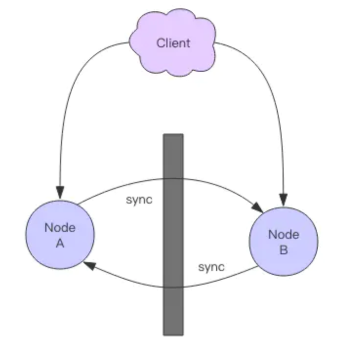
一句话概括 CAP 原理就是——网络分区发生时，一致性和可用性两难全。
最终一致
Redis 的主从数据是异步同步的，所以分布式的 Redis 系统并不满足「一致性」要求。当客户端在 Redis 的主节点修改了数据后，立即返回，即使在主从网络断开的情况下，主节点依旧可以正常对外提供修改服务，所以 Redis 满足「可用性」。
Redis 保证「最终一致性」，从节点会努力追赶主节点，最终从节点的状态会和主节点的状态将保持一致。如果网络断开了，主从节点的数据将会出现大量不一致，一旦网络恢复，从节点会采用多种策略努力追赶上落后的数据，继续尽力保持和主节点一致。
主从同步
Redis 同步支持主从同步和从从同步，从从同步功能是 Redis 后续版本增加的功能，为了减轻主库的同步负担。后面为了描述上的方便，统一理解为主从同步。

增量同步
Redis 同步的是指令流，主节点会将那些对自己的状态产生修改性影响的指令记录在本地的内存 buffer 中，然后异步将 buffer 中的指令同步到从节点，从节点一边执行同步的指令流来达到和主节点一样的状态，一边向主节点反馈自己同步到哪里了 (偏移量)。
因为内存的 buffer 是有限的，所以 Redis 主库不能将所有的指令都记录在内存 buffer 中。Redis 的复制内存 buffer 是一个定长的环形数组，如果数组内容满了，就会从头开始覆盖前面的内容。
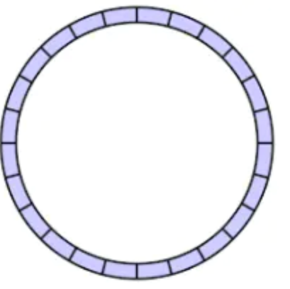
如果因为网络状况不好，从节点在短时间内无法和主节点进行同步，那么当网络状况恢复时，Redis 的主节点中那些没有同步的指令在 buffer 中有可能已经被后续的指令覆盖掉了，从节点将无法直接通过指令流来进行同步，这个时候就需要用到更加复杂的同步机制 —— 快照同步。
快照同步
快照同步是一个非常耗费资源的操作，它首先需要在主库上进行一次 bgsave 将当前内存的数据全部快照到磁盘文件中，然后再将快照文件的内容全部传送到从节点。从节点将快照文件接受完毕后，立即执行一次全量加载，加载之前先要将当前内存的数据清空。加载完毕后通知主节点继续进行增量同步。
在整个快照同步进行的过程中，主节点的复制 buffer 还在不停的往前移动，如果快照同步的时间过长或者复制 buffer 太小，都会导致同步期间的增量指令在复制 buffer 中被覆盖，这样就会导致快照同步完成后无法进行增量复制，然后会再次发起快照同步，如此极有可能会陷入快照同步的死循环。
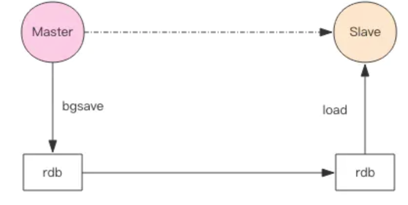
所以务必配置一个合适的复制 buffer 大小参数，避免快照复制的死循环。
增加从节点
当从节点刚刚加入到集群时，它必须先要进行一次快照同步，同步完成后再继续进行增量同步。
无盘复制
主节点在进行快照同步时，会进行很重的文件 IO 操作，特别是对于非 SSD 磁盘存储时，快照会对系统的负载产生较大影响。特别是当系统正在进行 AOF 的 fsync 操作时如果发生快照，fsync 将会被推迟执行，这就会严重影响主节点的服务效率。
所以从 Redis 2.8.18 版开始支持无盘复制。所谓无盘复制是指主服务器直接通过套接字将快照内容发送到从节点，生成快照是一个遍历的过程，主节点会一边遍历内存，一边将序列化的内容发送到从节点，从节点还是跟之前一样，先将接收到的内容存储到磁盘文件中，再进行一次性加载。
Wait 指令
Redis 的复制是异步进行的，wait 指令可以让异步复制变身同步复制，确保系统的强一致性 (不严格)。wait 指令是 Redis3.0 版本以后才出现的。
> set key value
OK
> wait 1 0
(integer) 1
wait 提供两个参数，第一个参数是从库的数量 N，第二个参数是时间 t，以毫秒为单位。它表示等待 wait 指令之前的所有写操作同步到 N 个从库 (也就是确保 N 个从库的同步没有滞后)，最多等待时间 t。如果时间 t=0，表示无限等待直到 N 个从库同步完成达成一致。
假设此时出现了网络分区，wait 指令第二个参数时间 t=0，主从同步无法继续进行，wait 指令会永远阻塞，Redis 服务器将丧失可用性。
小结
主从复制是 Redis 分布式的基础，Redis 的高可用离开了主从复制将无从进行。后面的章节我们会开始讲解 Redis 的集群模式，这几种集群模式都依赖于本节所讲的主从复制。
不过复制功能也不是必须的，如果你将 Redis 只用来做缓存，跟 memcache 一样来对待，也就无需要从库做备份，挂掉了重新启动一下就行。但是只要你使用了 Redis 的持久化功能，就必须认真对待主从复制，它是系统数据安全的基础保障。